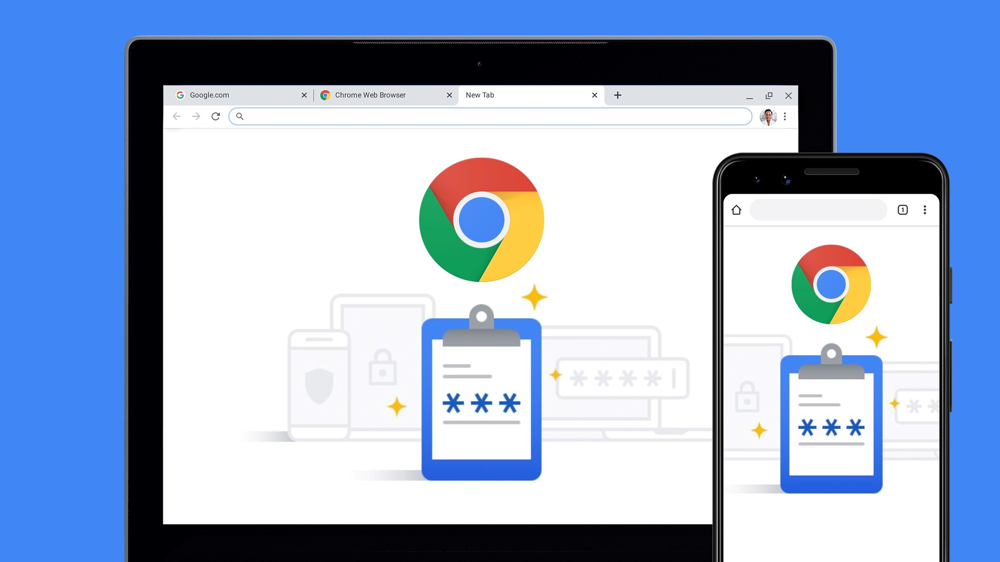
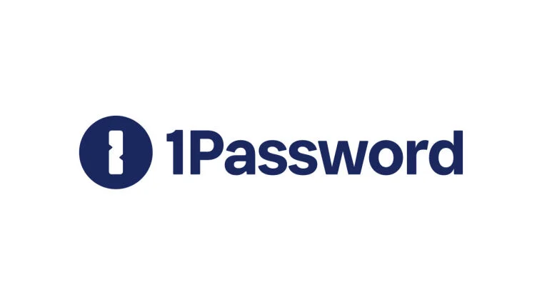
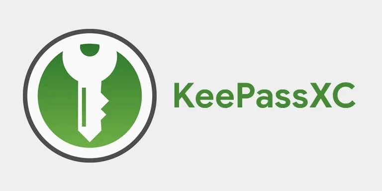

Why do we need strong passwords?
While our society becomes more digital, it will become increasingly important to protect
our various online accounts from social media to banking. Having a strong password ensures
that these accounts remain secure. Most people use a very simple password, and they use the same password
across all accounts. This is not a good idea because companies get breached all the time. When this happens,
there is a possibility that your data has been compromised. A bad actor can then try your credentials on other
sites. If you are using the same password across all accounts, you can see how bad things can get.

Tradeoffs, Easy to remember vs Secure
When coming up with a password there are some tradeoffs that have to be made. Password creating tradeoffs are
on a sliding scale between being easy to remember or more secure. Increasing one of these inherently means the
other will be lower. For example, a password like "Water123" is very easy to remember, but is not very secure.
On the other hand, a password like "ë;jDjq3W-´7êÖg0´1äKP" would be nearly impossible to remember, but is
extremely secure. Finding this balance is important, but some general recommendations is to lean on the side
of secure for more important accounts like banking.

Password strength, Entropy
You might be wondering, how can I tell if my password is strong? That is where the concept of entropy comes
in. The entropy of a password is a value that refers to how predictable it is to guess a password. It is based
on the length of the password, and the different types of characters that make up the password. Longer passwords
will have a higher entropy, and passwords that contain different types of characters like uppercase, lowercase,
numbers, special characters, etc, will have a high entropy. Having a high entropy level is the goal when creating
a password. This is to ensure protection from password crackers. An entropy level of at least 60 bits is good
for withstanding brute force password cracking algorithms. You may be wondering that this is still a bit much
to take in as an everyday user. How can I remember all these complex passwords? That is where password managers
come in.

Enter password managers
Password managers provide a way for us to easily remember the different passwords for our accounts. Think of
them like a vault that needs one key to open, and store the rest of your keys. The main categories of
password managers are browser-based, cloud-based, and desktop-based password managers.
Browser-based password managers are the ones that come with most popular web browsers like Chrome or Safari.
You have probably seen these when logging into an account and the browser asks you to save the password so
you can autofill in the future. These password managers area good first step because they are easy to use,
accessible, and free, but they do lack some features that other password managers have.

Cloud-based password managers store you passwords on cloud servers. They tend to have more robust settings
and customization options. Because they are on the cloud and offer more features, they usually come at a cost.
Another thing to think about is that since they are on the cloud, there is a risk of your passwords being compromised
by either the company providing these services or malicious actors. An example of a cloud-based password manager
is 1Password.

Desktop-based password managers are similar to their cloud-based counterparts, but they store you passwords
locally on you device. This provides much better security, along with all the features that usually come with
cloud-based password managers. A great example of a desktop-based password manager is KeePassXC.
